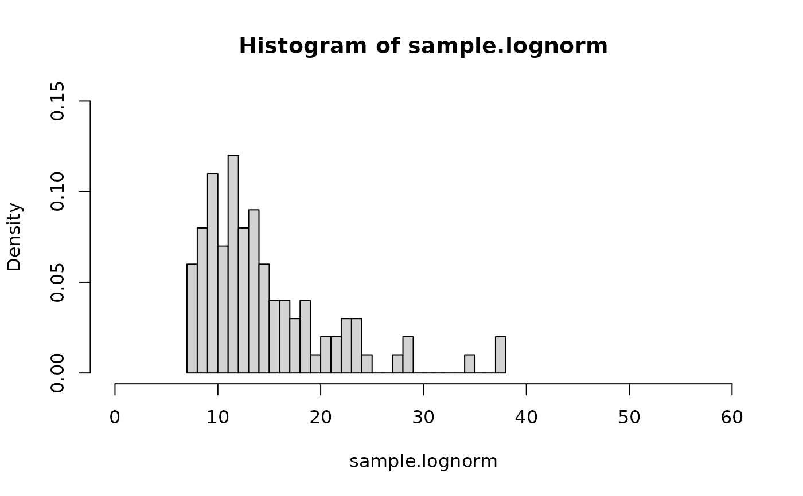
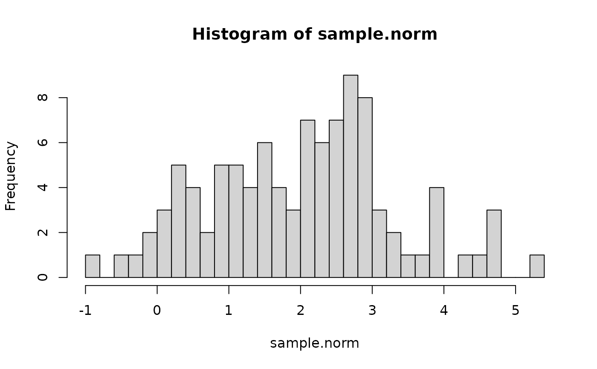
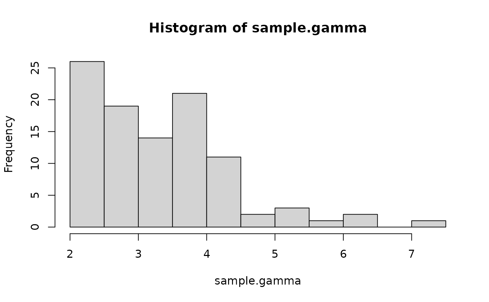

R/a_rtrunc.R, R/beta.R, R/binomial.R, and 10 more
rtrunc.RdRandom generation for the truncated exponential family distributions. Please ferer to the "Details" and "Examples" section for more information on how to use this function.
rtrunc(n, family = "gaussian", ...)
rtruncbeta(n, shape1, shape2, a = 0, b = 1)
rtruncbinom(n, size, prob, a = 0, b = size)
rtruncchisq(n, df, a = 0, b = Inf)
rtrunccontbern(n, lambda, a = 0, b = 1)
rtruncexp(n, rate = 1, a = 0, b = Inf)
rtruncgamma(n, shape, rate = 1, scale = 1/rate, a = 0, b = Inf)
rtruncinvgamma(n, shape, rate = 1, scale = 1/rate, a = 0, b = Inf)
rtruncinvgauss(n, m, s, a = 0, b = Inf)
rtrunclnorm(n, meanlog, sdlog, a = 0, b = Inf)
rtruncnbinom(n, size, prob, mu, a = 0, b = Inf)
rtruncnorm(n, mean, sd, a = -Inf, b = Inf)
rtruncpois(n, lambda, a = 0, b = Inf)sample size
distribution family to use
individual arguments to each distribution
positive shape parameter alpha
positive shape parameter beta
point of left truncation
point of right truncation
target for number of successful trials, or dispersion parameter (the shape parameter of the gamma mixing distribution). Must be strictly positive, need not be integer.
probability of success on each trial
degrees of freedom for "parent" distribution
mean and var of "parent" distribution
inverse gamma rate parameter
inverse gamma shape parameter
inverse gamma scale parameter
vector of means
vector of dispersion parameters
mean of un-truncated distribution
standard deviation of un-truncated distribution
alternative parametrization via mean
mean of parent distribution
standard deviation is parent distribution
A sample of size n drawn from a truncated distribution
vector of one of the rtrunc_* classes containing the sample
elements, as well as some attributes related to the chosen distribution.
One way to use this function is by calling the rtrunc
generic with the family parameter of your choice. You can also
specifically call one of the methods (e.g. rtrunc.poisson(10, lambda=3)
instead of `rtrunc(10, family="poisson", lambda=3)). The latter is more
flexible (i.e., easily programmable) and more robust (i.e., it contains
better error handling and validation procedures), while the former better
conforms with the nomenclature from other distribution-related functions in
the stats package.
The current sample-generating algorithm may be slow if the distribution is largely represented by low-probability values. This will be fixed soon. Please follow https://github.com/ocbe-uio/TruncExpFam/issues/72 for details.
# Truncated binomial distribution
sample.binom <- rtrunc(100, family = "binomial", prob = 0.6, size = 20, a = 4, b = 10)
sample.binom
#> [1] 10 8 10 10 10 9 9 8 6 9 10 10 10 9 9 9 10 9 9 9 9 9 10 10 10
#> [26] 10 9 10 9 8 10 10 8 10 8 9 7 9 9 10 10 10 10 9 10 10 10 7 8 10
#> [51] 10 9 9 8 9 9 9 10 10 6 10 9 10 10 8 10 10 10 10 9 9 10 7 10 8
#> [76] 9 7 10 8 10 8 10 10 10 10 9 9 10 9 10 9 8 9 9 10 9 8 9 9 8
plot(table(sample.binom), ylab = "Frequency", main = "Freq. of sampled values")
# Truncated Log-Normal distribution
sample.lognorm <- rtrunc(
n = 100, family = "lognormal", meanlog = 2.5, sdlog = 0.5, a = 7
)
summary(sample.lognorm)
#> Min. 1st Qu. Median Mean 3rd Qu. Max.
#> 7.108 10.249 13.242 15.312 17.029 43.133
hist(
sample.lognorm,
nclass = 35, xlim = c(0, 60), freq = FALSE,
ylim = c(0, 0.15)
)

# Normal distribution
sample.norm <- rtrunc(n = 100, mean = 2, sd = 1.5, a = -1)
head(sample.norm)
#> [1] 3.0710824 3.8145637 1.9892382 1.6361534 -0.4305508 2.3732429
hist(sample.norm, nclass = 25)

# Gamma distribution
sample.gamma <- rtrunc(n = 100, family = "gamma", shape = 6, rate = 2, a = 2)
hist(sample.gamma, nclass = 15)

# Poisson distribution
sample.pois <- rtrunc(n = 10, family = "poisson", lambda = 10, a = 4)
sample.pois
#> [1] 10 8 9 6 8 7 12 10 8 7
plot(table(sample.pois))